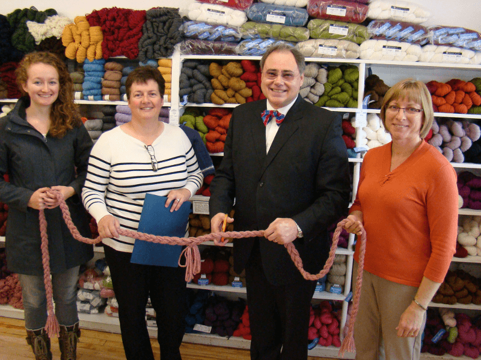

About Us
The Wool & Silk Co. has come to town!
We are a new yarn shop in a familiar location in Shelburne. There is a new look with a homey, comfortable environment. Along with that comes the variety of quality fine yarns shoppers are accustomed to as well as a several new products.
We are situated in the previous location of the Shelburne Bakery, which became Silks Bakery, eventually becoming a yarn shop. In fact, the shelving for the bakery now houses yarn!
Our shop ideal is “Where Beautiful Things Begin”. How lovely to have something to enjoy and be creative with! There are "Sit & Knits", Classes, and a Saturday morning junior knitting group. This will give people the chance to get together with friends, and others who share their interest in knitting/crocheting.
For more information, contact The Wool and Silk Co. at 519 925-6194, woolandsilkco@gmail.com or visit 138 Main St. W. right here in Shelburne for a yarn shopping treat to remember!
